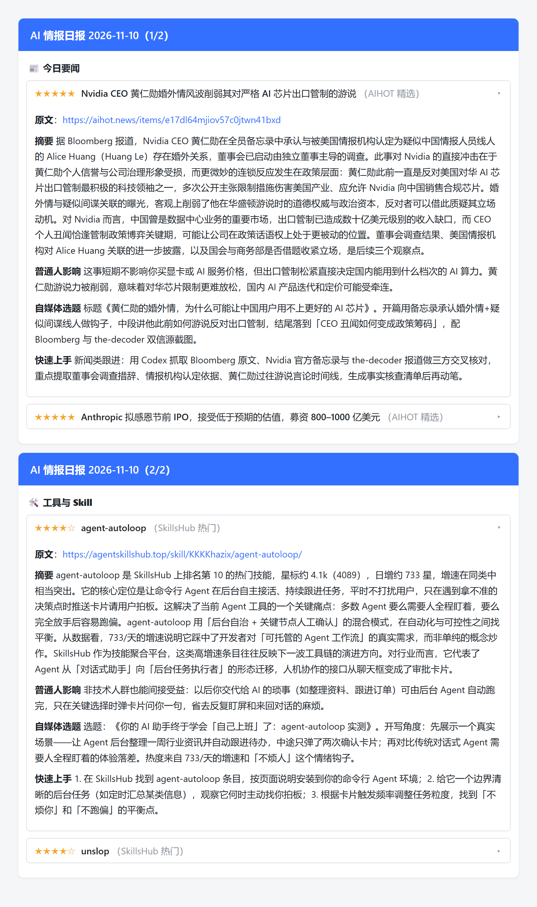

每天定时采集 AI 新闻 / AI 工具 / 开源 Skill，经 LLM 筛选判重与逐条深度加工，
以飞书折叠卡片推送日报 —— 每条四段：摘要 / 普通人影响 / 自媒体选题 / 快速上手。

卡片标题常驻、正文折叠，点开看完整分析。上图由真实推送数据与真实 LLM 加工结果渲染而成
（tools/render_preview.py 可复现）。
「今日要闻」走中文源，「工具与 Skill」走 agent-skills-hub / GitHub Trending / Show HN，按「冒头度」排序。
判重交给 LLM：同一件事的多家报道聚成一条，只留信息最全的那篇。
每条产出 250–400 字摘要 + 普通人影响 + 自媒体选题 + 快速上手，素材不足宁可跳过不硬编。
GitHub Actions 定时跑，SQLite 记已推送，跨次跨天不重推；单源挂掉不影响其他源。
git clone https://github.com/edccce64/ai-news-radar.git
cd ai-news-radar
python -m venv .venv
.venv\Scripts\python.exe -m pip install -r requirements.txt
copy .env.example .env # 填 LLM key 与飞书 webhook（UTF-8 无 BOM）
.venv\Scripts\python.exe main.py --dry-run # 试跑，不推送
.venv\Scripts\python.exe main.py # 真推送部署到 GitHub Actions、配置飞书机器人、开签名校验等完整步骤见 README。
AIHOT 精选 机器之心 新智元 量子位 AI 前线 36Kr AI 少数派 AI agent-skills-hub GitHub Trending Show HN
RSS 内容版权归原发布方；agent-skills-hub 的目录数据仅运行时抓取、不再分发； RSSHub 镜像与公众号 RSS 桥为第三方服务。详见 第三方条款。